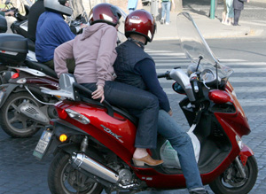

ExtraIl mio nuovo motorinoForte! Italian teenagers are so lucky!  ForumCreate your own forum on loves and hates. Choose the topic that you would like to talk about. You can set up several forums. For ideas and inspiration, visit http://community2.2night.it, and select ‘Forum: Love & Hate’. Incomincia!
Italia autentica! PersonaggiGo to www.bambini.rai.it. Choose the activity on i personaggi.This activity gives you the opportunity to experience what Italian children are exposed to on the Internet. It asks you to write the questions that you would like to ask your favourite personality about their likes and dislikes. These will be used to interview the character. You may not be familiar with the characters … ma non importa! Ti puoi divertire lo stesso! Cosa vorresti chiedere? Scrivi le domande qui!
If you would like to, you can also write the questions online and send them. |